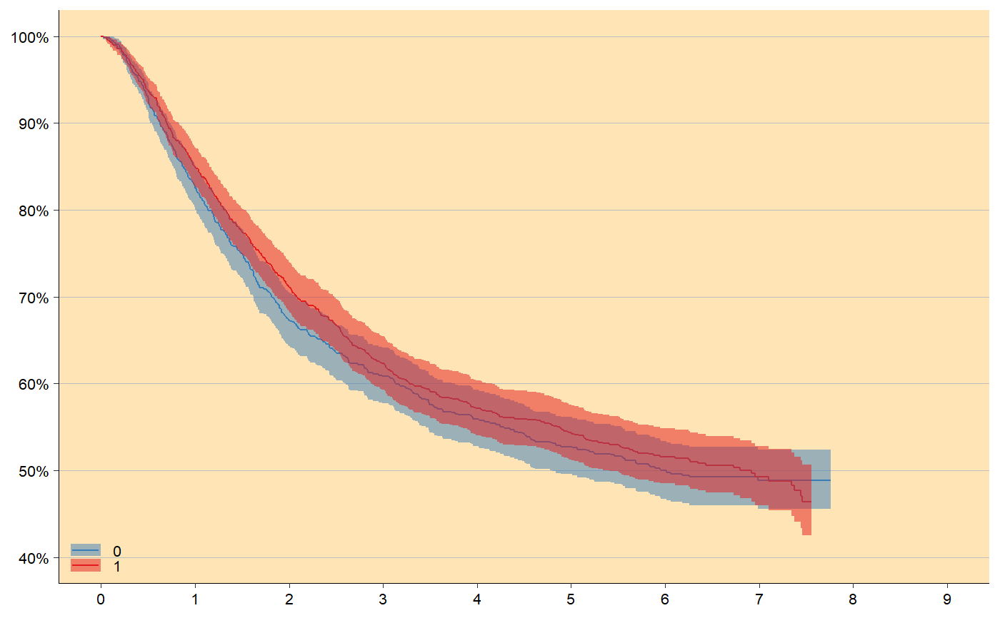
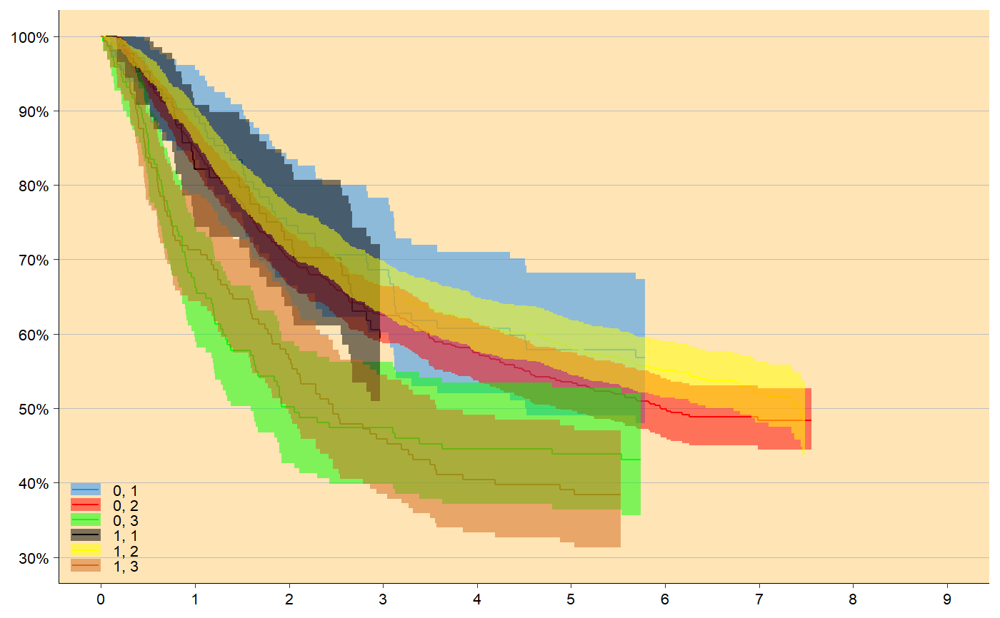

km_plot.RdKaplan-Meier plot using ggplot2.
km_plot( survfit_obj, make_step = NULL, first_point = 1, one_level = FALSE, y_lim = NULL, percent_accuracy = 1, y_breaks = 5, x_lim = NULL, x_breaks = 1, n_points = NULL, n_risk_break = 50, title = NULL, subtitle = NULL, title_size = 14, subtitle_size = 10, title_margin = 1, y_lab = NULL, x_lab = NULL, background_color = "moccasin", panel_grid_color = "grey", panel_grid_size = 0.3, axis_size = 0.3, text_size = 8, line_size = 0.5, show_ci = TRUE, ribbon_ci = TRUE, ribbon_alpha = 0.5, ci_line_size = 0.2, line_colors = c("#377EB8", "#E41A1C", "#4DAF4A", "#984EA3", "#FF7F00", "#FFFF33", "#A65628", "#F781BF"), legend_pos = c(0, 0), legend_labels = ggplot2::waiver(), label_breaks = ggplot2::waiver(), legend_key_height_mult = 1 )
| survfit_obj | Object returned from survfit function in survival package. Also works with data frame if year and surv variable exist. lower and upper variable needed if show_ci = TRUE. Specify strata variable needed if several curves wanted. |
|---|---|
| make_step | If TRUE, step data will be created. |
| first_point | If make_step = TRUE, first_point for KM is 1 and for competing risk 0. |
| one_level | Boolean indicating if there is only one level in the strata. |
| y_lim | Limit on y-axis. |
| percent_accuracy | Set accuracy for |
| y_breaks | Length between each break on y-axis. |
| x_lim | Limit on x-axis. |
| x_breaks | Length between each break on x-axis. |
| n_points | Number of points to be plotted, useful to change if file is large because of too many points! |
| n_risk_break | Minimum number at risk to include |
| title | Plot title, NULL for no title. |
| subtitle | Small text under title, NULL for no subtitle. |
| title_size | Text size of title in pt. |
| subtitle_size | Text size of subtitle in pt. |
| title_margin | Space between title and subtitle in pt. |
| y_lab | Y-axis label. |
| x_lab | X-axis label. |
| background_color | Color of the panel background. |
| panel_grid_color | Color of the panel grid lines. |
| panel_grid_size | Size of the panel grid lines in plot, useful to change if large dpi! |
| axis_size | Size of the axis lines, useful to change if large dpi! |
| text_size | Size of the text in pt. |
| line_size | Size of the head lines. |
| show_ci | If TRUE, show confidence interval lines. |
| ribbon_ci | Show confidence interval |
| ribbon_alpha | Degree of transparency for confidence interval |
| ci_line_size | Size of the confidence interval lines. |
| line_colors | Color of the different curves. |
| legend_pos | Position of the legend in plot. |
| legend_labels | Label for each legend key, default order as they appear in names(survfit_obj$strata). |
| label_breaks | Order of the legend keys. |
| legend_key_height_mult | Increase space between legend keys with a multiple. |
ggplot object containing Kaplan-Meier plot.
# KM-plot with 2 levels survfit_obj <- survival::survfit(survival::Surv(time/365.24, status) ~ sex, data = survival::colon ) km_plot(survfit_obj, y_lim = c(40,100), y_breaks = 10, x_lim = c(0,9))# KM-plot with 6 levels survfit_obj <- survival::survfit(survival::Surv(time/365.24, status) ~ sex + differ, data = survival::colon ) km_plot(survfit_obj, y_lim = c(30,100), y_breaks = 10, x_lim = c(0,9), line_colors = c('dodgerblue', 'red', 'green', 'black', 'yellow', 'chocolate'))